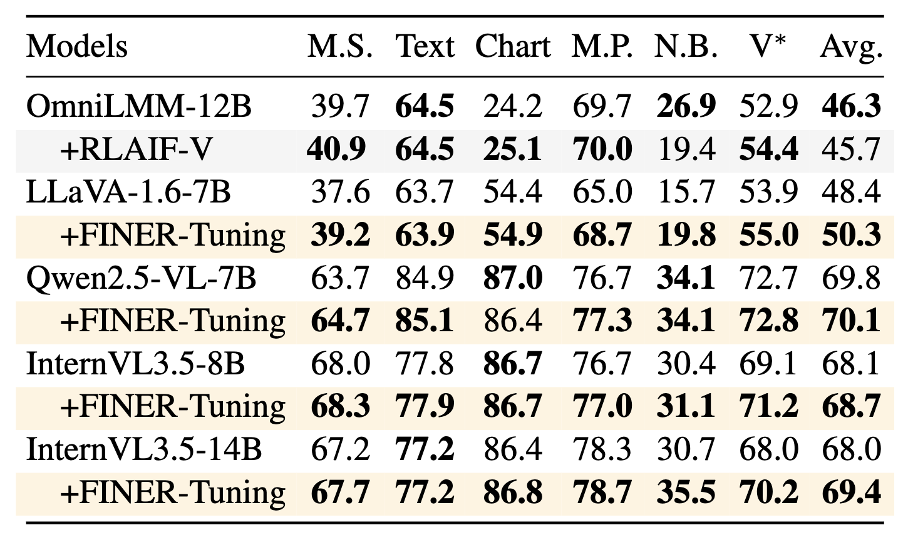

FINER: MLLMs Hallucinate under Fine-grained Negative Queries
Abstract
Multimodal large language models (MLLMs) struggle with hallucinations, particularly with fine-grained queries, a challenge underrepresented by existing benchmarks that focus on coarse image-related questions. We introduce FIne-grained NEgative queRies (FINER), alongside two benchmarks: FINER-CompreCap and FINER-DOCCI. Using FINER, we analyze hallucinations across four settings: multi-object, multi-attribute, multi-relation, and “what” questions. Our benchmarks reveal that MLLMs hallucinate when fine-grained mismatches co-occur with genuinely present elements in the image. To address this, we propose FINER-Tuning, leveraging Direct Preference Optimization (DPO) on FINER-inspired data. Finetuning four frontier MLLMs with FINER-Tuning yields up to 24.2% gains on hallucinations from our benchmarks, while simultaneously improving performance on eight existing hallucination suites and enhancing general multimodal capabilities across six benchmarks.
Motivational Study
We begin with a simple question: can MLLMs still reject a false statement when most of the query is correct? To test this, we progressively make negative queries more fine-grained. Starting from a single wrong object, we then add correct attributes and relations, so that each query contains only one contradiction while the rest remains visually consistent. This gives seven levels of granularity, from coarse to fine.
The trend is striking. As the query becomes more detailed, the base model becomes much more likely to answer “Yes” to claims that should be rejected. For InternVL3.5-14B, accuracy drops from around 80% to around 20% on FINER-CompreCap, and from around 58% to around 15% on FINER-DOCCI. In other words, subtle mistakes hidden inside otherwise correct descriptions are much harder for MLLMs to detect. FINER-Tuning noticeably improves this behavior, especially at the finest levels, motivating the need for benchmarks and training data that specifically target fine-grained hallucinations.

FINER-Benchmarks
FINER is built to test whether an MLLM can spot a small mistake hidden inside a detailed query. We start from a scene graph containing objects, attributes, and relations. For each element, we generate several plausible but incorrect alternatives, such as replacing an object, changing a color, or modifying a relation. We then compose both positive and negative questions from these scene graphs.
The benchmark contains four settings. Multi-obj checks whether the model can detect one wrong object among several correct ones. Multi-attr does the same for attributes. Multi-rel focuses on relations. Wh asks open-form “what” questions with one incorrect attribute embedded in the query. Instead of simple yes/no evaluation, FINER uses multiple-choice questions, forcing the model to identify the correct visual content rather than relying on answer bias.
We release two benchmark variants. FINER-CompreCap is built from CompreCap scene graphs. FINER-DOCCI is built from DOCCI captions, where we extract scene-graph-like annotations with Gemini, filter them with Qwen2.5-VL-72B, and verify samples with humans. Overall, the two benchmarks cover tens of thousands of MCQs and systematically probe fine-grained hallucinations beyond coarse object-level mismatches.

FINER-Tuning
FINER-Tuning is a data-driven training pipeline designed to make MLLMs better at rejecting fine-grained false queries. We start from dense long captions from Pixmo, avoiding overlap with COCO and the DOCCI training split. Using Phi-4-14B, we extract four kinds of positive phrases that mirror our benchmark settings: object summaries, attribute summaries, relation summaries, and composed phrases for “what” questions.
We then generate minimally edited negative counterparts by changing exactly one semantic component, such as an object, an attribute, or a relation. From these positive and negative phrases, we build both positive and negative query-answer pairs. The accepted response always states the correct visual fact, while the rejected response gives the wrong one. For object, attribute, and relation questions, we use templates; for the freer Wh setting, we let the LLM generate the question-answer pairs directly.
Finally, we train the model with Direct Preference Optimization (DPO), so that it prefers grounded answers over hallucinated ones. This trains the model not only to answer correctly, but also to explicitly reject subtle false claims embedded in otherwise plausible queries.

Results on FINER-Benchmarks
FINER is challenging even for strong frontier MLLMs. Performance drops sharply when models must reject subtle mistakes involving multiple objects, attributes, or relations, and the Wh setting remains particularly difficult. Prior hallucination-reduction methods that work on earlier benchmarks transfer poorly to FINER, showing that coarse hallucination benchmarks do not fully capture this problem.
FINER-Tuning consistently improves all four base models on both FINER-CompreCap and FINER-DOCCI. The gains are especially strong on the more fine-grained settings. For example, InternVL3.5-14B improves by up to 24.2% on FINER-CompreCap, and the tuned 14B model becomes competitive with much larger or closed models in several settings. We also find a clear trend: performance declines as the number of queried attributes or relations increases, but FINER-Tuning reduces this drop and brings larger gains precisely where the questions are hardest.


Results on General Hallucination Benchmarks
A key question is whether training on FINER only helps on FINER itself, or whether it generalizes to broader hallucination evaluation. Encouragingly, FINER-Tuning transfers well. Across eight existing hallucination benchmarks, it consistently improves Qwen2.5-VL and InternVL3.5 on both discriminative and generative settings. On DASH, for instance, it improves the two InternVL3.5 variants by 6.2% and 5.5%, and it also lowers hallucination on MMHal-Bench and improves scores on HaloQuest.
This matters because FINER-Tuning is not optimized for a single narrow benchmark. Instead, it teaches models to detect subtle contradictions in queries, and this stronger discrimination ability carries over to other hallucination suites as well.


Results on General Multimodal Capabilities
Hallucination reduction often comes with an alignment tax, where gains on the target task hurt general ability. FINER-Tuning avoids this trade-off. On six general-purpose multimodal benchmarks, it maintains or improves the performance of strong base models, including gains on MMStar, MMVP, NaturalBench, and V* Bench. For InternVL3.5-14B, the average score improves by 1.4%. This suggests that FINER provides a useful training signal that complements, rather than damages, a model’s broader multimodal capabilities.

BibTeX
@misc{xiao2026finer,
title={FINER: MLLMs Hallucinate under Fine-grained Negative Queries},
author={Rui Xiao and Sanghwan Kim and Yongqin Xian and Zeynep Akata and Stephan Alaniz},
year={2026},
note={Computer Vision and Pattern Recognition (CVPR)},
url={https://YOUR_DOMAIN.com/YOUR_PROJECT_PAGE}
}